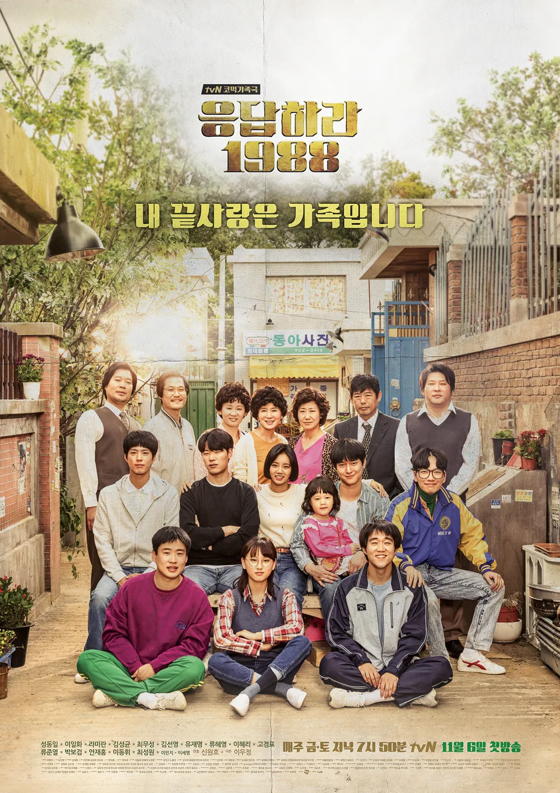
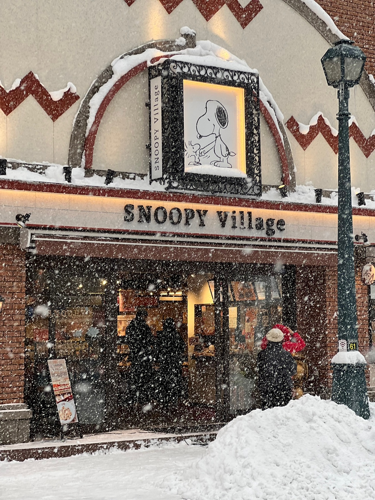

응답하라 1988
쌍팔년도 쌍문동, 한 골목 다섯 가족의 왁자지껄 코믹 가족극
안녕하세요! 도전과 여행을 좋아하는 백엔드 크루 로지입니다:)
우테코에서 '스스로 깊이 있는 생각을 통해 결론 도출하기'를 얻어가고 싶은 백엔드 크루 로지입니다.
크루들과 함께 열심히 성장해서 수료 후에는 CS 마스터가 되어있으면 좋겠어요!!
| 이름 | 이지현 |
|---|---|
| MBTI | INTJ |
| 취미 | 드라마 보기, 영화 보기, 음악 듣기, 요리하기 |
| 좋아하는 음식 | 빵, 케이크, 해산물(회, 새우), 고기, 등갈비 김치찌개, 닭볶음탕, 오징어 뭇국 |
여행 중 가장 좋았던 순간 (순서대로 스위스, 터키, 훗카이도)





쌍팔년도 쌍문동, 한 골목 다섯 가족의 왁자지껄 코믹 가족극

모태솔로 팀(돔놀 글리슨)은 성인이 된 날, 아버지(빌 나이)로부터 놀랄만한 가문의 비밀을 듣게 된다.
바로 시간을 되돌릴 수 있는 능력이 있다는 것!
그것이 비록 히틀러를 죽이거나 여신과 뜨거운 사랑을 할 수는 없지만, 여자친구는 만들어 줄 순 있으리..
꿈을 위해 런던으로 간 팀은 우연히 만난 사랑스러운 여인 메리에게 첫눈에 반하게 된다.
그녀의 사랑을 얻기 위해 자신의 특별한 능력을 마음껏 발휘하는 팀. 어설픈 대시, 어색한 웃음은 리와인드!
꿈에 그리던 그녀와 매일매일 최고의 순간을 보낸다.
하지만 그와 그녀의 사랑이 완벽해질수록 팀을 둘러싼 주변 상황들은 미묘하게 엇갈리고, 예상치 못한 사건들이 여기저기 나타나기 시작하는데…
어떠한 순간을 다시 살게 된다면, 과연 완벽한 사랑을 이룰 수 있을까?
오늘 새롭게 배운 것들을 기록합니다.
header, nav, main, section, article, footer 등 시멘틱 태그의 역할과 사용법을 배웠다.